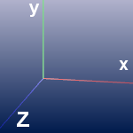
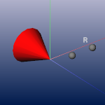
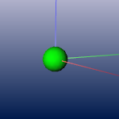
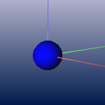
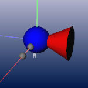
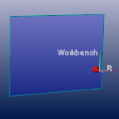
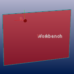

This module displays a model of the currently loaded Virtual Reality Option configuration. It's intended to give the visual feedback needed during the configuration process and for easier error detection. It shows the projection planes, camera, sensor and scene positions as well as the button state. Therefore the fourth viewer is used.
Objects associated with a local coordinate system are drawn with an axis
consisting of three colored line segments. The x axis is red, y is green, and z is blue.

The camera position is marked with a red cone and two small gray spheres, one for each eye.
The eye spheres are translated according to the configured eye offset value. One eye sphere
is marked with the letter R which means that this is the sphere for the right eye.

The default object- or scene position is marked with a green sphere.

Blue spheres represent sensors (3D-tracker), one for every sensor. If one of the buttons is pressed,
the blue sphere of the first sensor turns white until all buttons are released.

If the camera is bound to one of the 3D sensors, which means that head tracking is turned on,
the red cone representing the camera is glued to the blue sensor sphere and follows its movement.
At the moment the head-tracking feature is turned off, the camera model snaps back to the
default camera position.

Finally the projection planes are drawn at the positions and dimensions specified in the configuration file.
The following two images are showing an environment with a single projection plane.
The front side looks blue and a projection plane observed from its back side appears red.
By observing the color one can verify that the edge points were specified in the right order.
front view

rear view

The user-defined name of the plane is drawn in its center. Since projection planes are given as a set of four edge points it is possible to produce a non-planar polygon. This misconfiguration leads to a clearly visible edge crossing the plane.